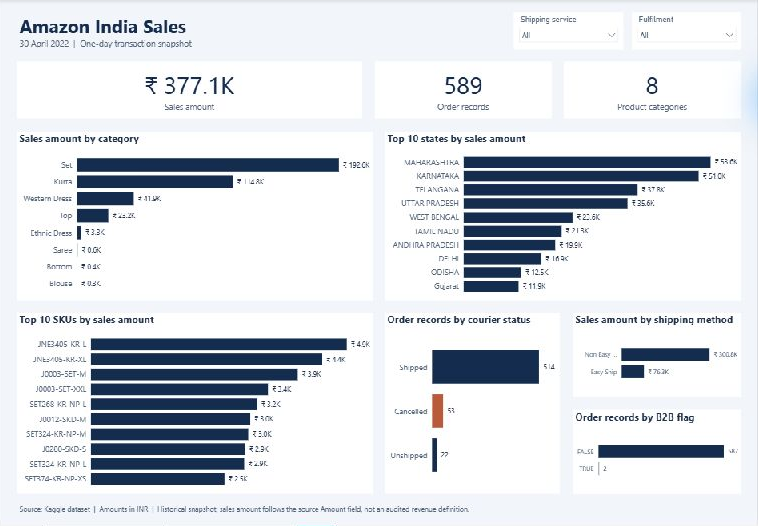

Amazon India Sales Performance
Sales analysis · 30 April 2022 · Historical dataset
Transformed an e-commerce dataset into an interactive Power BI report to explore sales by product category, state, SKU, shipping method, and courier status.

- Sales amount
- ₹377,118.21
- Order records
- 589
- Product categories
- 8
Tools: Excel, MySQL, Power BI, Star Schema
View report previewProject approach and scope
The question
How were sales distributed across products, locations, and shipping methods within this one-day snapshot?
The approach
Cleaned and standardized the data in Excel, addressing missing values, inconsistent fields, and redundant columns. Built a star schema in MySQL with a sales fact table and product, location, and shipment dimensions, then connected the model to Power BI.
The report
Combined sales totals, category rankings, geographic performance, and shipping information in one view. Shipping-service and fulfilment filters support exploration. The redesign uses aligned metrics, horizontal rankings, compact filters, and clearer labels.
What the snapshot shows
Set was the largest category by sales amount, followed by Kurta. Maharashtra led the state ranking. These observations describe the unfiltered report snapshot.
Scope and definitions
Source: an Amazon India sales dataset from Kaggle, as documented in the original project. This report covers 30 April 2022 only and does not establish longer-term trends. Sales amount sums the source Amount field and is not presented as audited revenue. Order records counts nonblank OrderID entries rather than distinct orders.